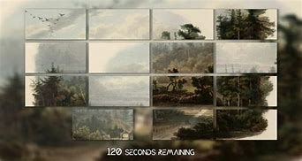
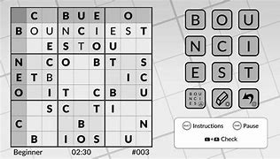

Guia de Platinas Fáceis para PlayStation 🎮
Uma página dedicada a ajudar gamers a conquistar platinas de forma rápida e eficiente!
Aqui você encontra dicas, guias e estratégias para desbloquear todos os troféus de seus jogos favoritos,
com foco em títulos acessíveis para iniciantes e jogadores que querem aumentar sua coleção de conquistas.
Simplifique seu caminho para a platina com nossos conteúdos detalhados e atualizados!
1. My Name is Mayo (1, 2 e 3) (PS4, PS5)
. Resumo: Clique repetidamente no pote de maionese e conclua pequenas missões relacionadas ao pote.
. Quantidade de Troféus: 51 (cada jogo)
. Tempo Estimado: 30 minutos
. Raridade: Muito Comum (90-95%)

2. Mr. Massagy (PS4)
. Resumo: Jogue o simulador de encontros, escolha respostas específicas para desbloquear finais.
. Quantidade de Troféus: 12
. Tempo Estimado: 1 hora
. Raridade: Muito Comum (90%)

3. Donut County (PS4, PS5)
. Resumo: Resolva quebra-cabeças engolindo objetos com um buraco controlado e complete desafios extras.
. Quantidade de Troféus: 21
. Tempo Estimado: 2 horas
. Raridade: Comum (50-60%)

4. One Night Stand (PS4)
. Resumo: Explore os múltiplos finais ao escolher diferentes opções de diálogo após acordar na casa de um estranho
. Quantidade de Troféus: 14
. Tempo Estimado: 1-2 horas
. Raridade: Comum (60%)

5. Slyde (PS4)
. Resumo: Resolva quebra-cabeças de peças deslizantes; todos os troféus podem ser obtidos em minutos.
. Quantidade de Troféus: 12
. Tempo Estimado: 15 minutos
. Raridade: Muito Comum (95%)

6. Goat Simulator (PS4, PS5)
. Resumo: Faça truques malucos com a cabra, complete missões estranhas e interaja com objetos pelo mapa.
. Quantidade de Troféus: 31
. Tempo Estimado: 5 horas
. Raridade: Rara (10-15%)

7. Chicken Police - Paint it RED! (PS4, PS5)
. Resumo: Resolva um mistério no estilo noir, completando todas as interações, diálogos e coletando itens opcionais.
. Quantidade de Troféus: 32
. Tempo Estimado: 4 horas
. Raridade: Comum (50%)

8. Oxenfree (PS4, PS5)
. Resumo: Progrida na história, faça escolhas específicas e complete múltiplos finais.
. Quantidade de Troféus: 14
. Tempo Estimado: 4-6
. Raridade: Comum (40-50%)
9. The Walking Dead (Telltale Series) (PS4, PS5)
. Resumo: Apenas complete a história, pois todos os troféus são desbloqueados automaticamente ao progredir.
. Quantidade de Troféus: 49
. Tempo Estimado: 8-10 horas por temporada
. Raridade: Comum (50-60%)

10. Life is Strange (PS4, PS5)
. Resumo: Complete a história e tire fotos (colecionáveis) em cada capítulo.
. Quantidade de Troféus: 61
. Tempo Estimado: 10-12 horas
. Raridade: Comum (40-50%)

11. Ratchet & Clank (2016) (PS4, PS5)
. Resumo: Progrida na história, colete parafusos dourados e melhore todas as armas.
. Quantidade de Troféus: 47
. Tempo Estimado: 12 horas
. Raridade: Comum (40%)

12. Spider-Man: Miles Morales (PS4, PS5)
. Resumo: Complete a campanha, todas as missões secundárias e colecione itens espalhados pelo mapa.
. Quantidade de Troféus: 50
. Tempo Estimado: 10-15 horas
. Raridade: Comum (50-60%)

13. Bear With Me (PS4)
. Resumo: Resolva o mistério completando diálogos e explorando locais. Use um guia para acelerar interações específicas.
. Quantidade de Troféus: 41
. Tempo Estimado: 3 horas
. Raridade: Comum (50%)

14. Word Sudoku by Powgi (PS4)
. Resumo: Resolva todos os quebra-cabeças de palavras e números. Não há limite de tempo, e guias podem ajudar.
. Quantidade de Troféus: 37
. Tempo Estimado: 3-5 horas
. Raridade: Comum (50%)

15. What Remains of Edith Finch (PS4, PS5)
. Resumo: Complete a narrativa e explore todas as histórias da família.
. Quantidade de Troféus: 10
. Tempo Estimado: 2-3 horas
. Raridade: Comum (50-60%)

16. TETRA's Escape (PS4)
. Resumo: Resolva puzzles simples usando peças geométricas, coletando estrelas e troféus automaticamente.
. Quantidade de Troféus: 14
. Tempo Estimado: 2-3 horas
. Raridade: Comum (60%)

17. Energy Cycle (PS4)
.Resumo: Complete quebra-cabeças de cores. Usar um guia torna isso extremamente rápido.
.Quantidade de Troféus: 14
.Tempo Estimado: 30 minutos
.Raridade: Muito Comum (90-95%)

18. The Mooseman (PS4, PS5)
. Resumo: Progrida pela história linear, colete artefatos e use habilidades para interagir com o ambiente.
. Quantidade de Troféus: 12
. Tempo Estimado: 2-3 horas
. Raridade: Comum (50%)

19. Road Bustle (PS4)
. Resumo: Ande ou corra pelo mapa para alcançar uma pontuação alta. É extremamente rápido e simples.
. Quantidade de Troféus: 21
. Tempo Estimado: 30 minutos
. Raridade: Muito Comum (90-95%)

20. Storm Boy (PS4)
. Resumo: Jogue mini-jogos simples e conclua a curta narrativa baseada no livro infantil.
. Quantidade de Troféus: 11
. Tempo Estimado: 30 minutos
. Raridade: Muito Comum (90%)